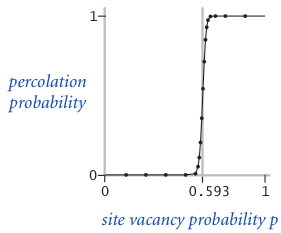
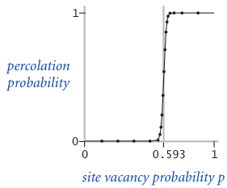
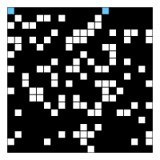
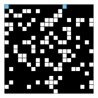
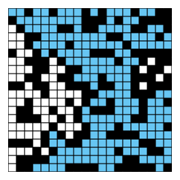

Homework 2: Percolation
Due: 10/9/2024
In contrast with previous homework assignments, this homework is comparable to a project in length. Start early. You have been warned. We will not grant extensions for failing to understand the depth of this homework.
FAQ
Each assignment will have an FAQ linked at the top. You can also access it by adding “/faq” to the end of the URL. The FAQ for Homework 2 is located here.
Getting the Skeleton Files
Please follow the Assignment Workflow Guide to get started with this assignment. This assignment is hw2.
Introduction
In this program, we’ll write a program to estimate the value of the percolation threshold via Monte Carlo simulation.
Intro Video
An introductory video for this HW can be found
at this link. It is broken into
three parts: Intro, Implementation Spoilers, and Optimization Spoilers. Feel free to ignore these spoilers for a more
difficult challenge. If you’d prefer to watch a eight year old video that Professor Hug made when he was at Princeton,
see this link. Note that these videos mention implementing PercolationStats.java;
we’ve now given you the full solution for this class, so you don’t need to worry about this step.
HW2 Slides
Slides for this HW can be found here. Because this is a HW and not a project, we give spoilers for how to approach the HW. You may ignore them if you’d like a bigger challenge.
Who cares?
Given a composite systems comprised of randomly distributed insulating and metallic materials: what fraction of the materials need to be metallic so that the composite system is an electrical conductor? Given a porous landscape with water on the surface (or oil below), under what conditions will the water be able to drain through to the bottom (or the oil to gush through to the surface)? Scientists have defined an abstract process known as percolation to model such situations.
The Model
We model a percolation system using an N-by-N grid of sites. Each site is either open or blocked. A full site is an open site that can be connected to an open site in the top row via a chain of neighboring (left, right, up, down) open sites. We say the system percolates if there is a full site in the bottom row. In other words, a system percolates if we fill all open sites connected to the top row and that process fills some open site on the bottom row. (For the insulating/metallic materials example, the open sites correspond to metallic materials, so that a system that percolates has a metallic path from top to bottom, with full sites conducting. For the porous substance example, the open sites correspond to empty space through which water might flow, so that a system that percolates lets water fill open sites, flowing from top to bottom.)
In the diagrams below, you can see that in the system on the left, the water is able to start in a site on the top row and trickle down through empty sites until it reaches an empty site on the bottom row.
Whereas on the right, the water in the site on the top row has no way of trickling down to an open site on the bottom row.

Percolation.java
Percolation class
To model a percolation system, complete the Percolation class
with the following API:
public class Percolation {
public Percolation(int N) // create N-by-N grid, with all sites initially blocked
public void open(int row, int col) // open the site (row, col) if it is not open already
public boolean isOpen(int row, int col) // is the site (row, col) open?
public boolean isFull(int row, int col) // is the site (row, col) full?
public int numberOfOpenSites() // number of open sites
public boolean percolates() // does the system percolate?
}
The Percolation Problem
In a famous scientific problem, researchers are interested in the following question: if sites are independently set to be open with probability $p$ (and therefore blocked with probability $1 − p$), what is the probability that the system percolates? When $p$ equals 0 (no site is open), the system does not percolate; when $p$ equals 1 (all sites are open), the system percolates. The plots below show the site vacancy probability $p$ versus the percolation probability for 20-by-20 random grid (left) and 100-by-100 random grid (right).
 

When $N$ is sufficiently large, there is a threshold value $p^*$ such that when $p < p^*$ a random N-by-N grid almost never percolates, and when $p > p^*$, a random N-by-N grid almost always percolates. No mathematical solution for determining the percolation threshold $p^*$ has yet been derived. Your task is to write a computer program to estimate $p^*$.
Fill out Percolation.java by implementing all the methods given in the above API.
The WeightedQuickUnionUF class
The WeightedQuickUnionUF class is provided by Princeton’s algs4 library, and has the following API:
public class WeightedQuickUnionUF {
public WeightedQuickUnionUF(int n) // creates a UF with n elements
public int count() // number of disjoint sets
public int find(int p) // the root of p's set
public boolean connected(int p, int q) // whether p and q are in the same set
public void union(int p, int q) // join p and q's sets together
}
Your code must use the
WeightedQuickUnionUFclass! It has already been implemented for you, so do not reimplement the Union Find ADT.
Tips and Corner Cases
IMPORTANT: We’ve released a set of videos that contain some hints for how to approach this homework! Please do watch them; they might save you a lot of time on this assignment.
Corner Cases
By convention, the row and column indices are integers between 0 and N − 1, where (0, 0) is the
upper-left site: Throw a java.lang.IndexOutOfBoundsException if any argument to open(), isOpen(), or isFull() is
outside its prescribed range. The constructor should throw a java.lang.IllegalArgumentException if N ≤ 0.
Performance Requirements
The constructor should take time proportional to $N^2$; all methods should take constant
time plus a constant number of calls to the union-find methods union(), find(), connected(), and count().
Meeting these requirements is somewhat tricky! You might consider creating a solution that simply works, before figuring
out a way to make it faster. For tips on meeting the speed requirements, see
the video at the beginning of
this spec. Your numberOfOpenSites() method must take constant time. Part of the goal of this assignment is to learn
how to cast one problem (Percolation) in terms of an already solved problem (Disjoint Sets, a.k.a Union Find).
If you are at this part of the spec and are still unsure of how to start, go through these slides and watch this video.
PercolationStats.java
Monte Carlo simulation. To estimate the percolation threshold, consider the following computational experiment:
- Initialize all sites to be blocked.
- Repeat the following until the system percolates:
- Choose a site uniformly at random among all blocked sites.
- Open the site.
- The fraction of sites that are opened when the system percolates provides an estimate of the percolation threshold.
For example, if sites are opened in a 20-by-20 grid according to the snapshots below, then our estimate of the percolation threshold is 204/400 = 0.51 because the system percolates when the 204th site is opened. The images correspond to the 50, 100, 150, and 204 sites being open, respectively.
 



If you’re interested in the math behind the following calculations, click here.
By repeating this computation experiment $T$ times and averaging the results, we obtain a more accurate estimate of the percolation threshold. Let $x_t$ be the fraction of open sites in computational experiment $t$. The sample mean $\mu$ provides an estimate of the percolation threshold; the sample standard deviation $\sigma$ measures the sharpness of the threshold.
$\mu = \frac{x_1 + x_2 + … + x_T}{T}$, $\sigma^2 = \frac{(x_1 - \mu)^2 + (x_2 - \mu)^2 + … + (x_T - \mu) ^2}{T-1}$
Assuming $T$ is sufficiently large (say, at least 30), the following provides a 95% confidence interval for the percolation threshold:
$[\mu - \frac{1.96\sigma}{\sqrt{T}}, \mu + \frac{1.96\sigma}{\sqrt{T}}]$
To perform a series of computational experiments, we’ve given you a PercolationStats data type.
The constructor takes two arguments N and T, and performs T independent computational experiments (
discussed above) on an N-by-N grid. Using this experimental data, it calculates the mean, standard deviation,
and the 95% confidence interval for the percolation threshold.
Open
PercolationStats.javaand take a look at the provided constructor and methods. Then, run themainmethod, and interpret the results. What do these numbers tell you about the solution to the Percolation Problem?There’s no deliverable for this portion of the assignment; if you’ve implemented
Percolation.javacorrectly, you should now have a 95% confidence interval for the percolation thresholdp.
Runtime Analysis (Ungraded)
This part of the HW will not be graded, but it is highly recommended that you at least read though and think about the following points:
-
Implement the
Percolationdata type using the quick-find algorithm in QuickFindUF. Use Stopwatch to measure the total running time ofPercolationStatsfor various values ofNandT. How does doublingNaffect the total running time? How does doublingTaffect the total running time? -
Now, implement the
Percolationdata type using the weighted quick-union algorithm inWeightedQuickUnionUF. Answer the same questions in the previous bullet.
Provided Files
We provide two clients that serve as large-scale visual traces.
We highly recommend using them for testing and debugging your Percolation implementation.
Sample Data Files
The inputFiles directory contains some sample files for use with the visualization client,
including input20.txt, which we will use below.
Here are the expected output images corresponding to each input file.
File-Based Visualization Client
PercolationPicture.java visualizes by performing the following steps:
- Read the grid size N from the file.
- Create an N-by-N grid of sites (initially all blocked).
- Read in a sequence of sites (row i, column j) to open from the file. After each site is opened, draw full sites in light blue, open sites (that aren’t full) in white, and blocked sites in black using standard draw, with site (0, 0) in the upper left-hand corner.
For the input file, input20.txt, the program should produce output as shown in the following images. The images
correspond to the 50, 100, 150, 204, and 250 sites being open, respectively.

You can run the visualizer on this input by passing in the correct arguments to the IntelliJ
program’s Run -> Edit Configurations -> + -> Application tab. Here, set the “Main class” to PercolationPicture
and set the “Program arguments” to an input file (for example, inputFiles/input20.txt). Finally, hit the “Run” button
to begin running the visualizer.
Open
PercolationPicture.javaand follow the steps above to run the visualizer. Use this tool to help you debug yourPercolation.javamethods!
Interactive Visualization Client
InteractivePercolationVisualizer.java animates the results of opening sites in a
percolation system, using the mouse as input. It takes a command-line integer N that specifies the grid size. As a
bonus, it prints out the sequence of sites opened in the same format used by PercolationPicture (described above),
so you can use it to prepare interesting files for testing. If you design an interesting data file, feel free to share
it on Ed.
Open
InteractivePercolationVisualizer.javaand follow the same steps asPercolationPictureto run the interactive visualizer. Note that for the interactive version, you do not need to provide a program argument.Use this tool to help you debug your
Percolation.javamethods!
Note: If you are using IntelliJ, you can choose which class to run (i.e. choose whose main method you want to run) in Run -> Edit Configurations. For more information, please check the FAQ
Testing
You will find InteractivePercolationVisualizer to be quite helpful as a sanity check that your Percolation class is implemented properly. Clicking on cells should open (and fill, if necessary) those sites, if your implementation is correct. There will also be a note for the number of open sites and whether the system percolates.
In the tests folder, we have provided two basic tests for you. You should add more tests to PercolationTest.java to test your code.
Submission & Deliverables
You should submit the usual way, by pushing to GitHub and then submitting on Gradescope. There will be no velocity limiting for this assignment.
Deliverables:
Percolation.java
Credits
This assignment originally developed by Kevin Wayne and Bob Sedgewick at Princeton University, with autograder built by Josh Hug for the Princeton Algorithms course.